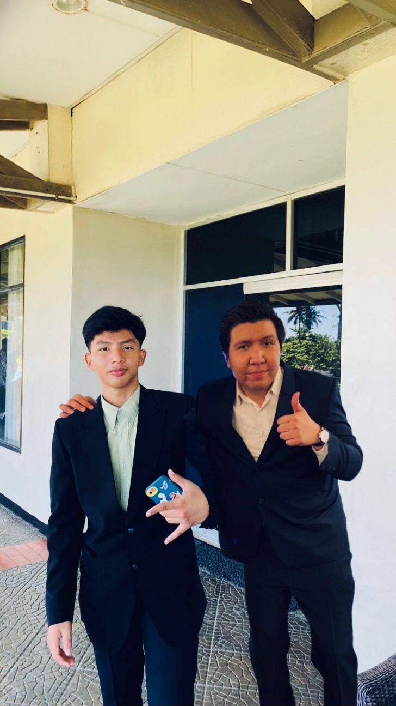
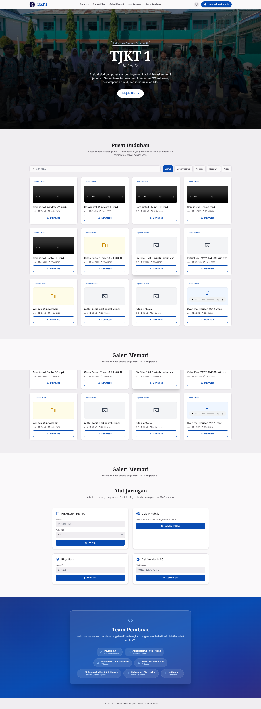

Greetings, I'm Adiel Radithya
|
Computer Network & Telecommunications (TJKT) student at SMKN 1 Kota Bengkulu (XI TJKT 1) — specializing in network architecture, cybersecurity, and AI engineering, with an ambition to contribute to deep-space communications and mission-critical network infrastructure.

Architecting the Future of Networks
I am Adiel Radithya Putra Irwana, a Computer Network & Telecommunication Engineering (TJKT) student at SMKN 1 Kota Bengkulu, Indonesia. My core passion lies at the intersection of network architecture, cybersecurity, and space technology.
My ultimate ambition is to contribute to NASA's Space Communications and Navigation (SCaN) division — designing resilient high-throughput protocols for deep-space communications, satellite networks, and lunar/Martian habitat infrastructure.
Protocol & Tech Stack Matrix
A comprehensive overview of tools, protocols, systems, and programming languages I leverage to design secure, high-performance infrastructure.
Featured Projects & Case Studies
Explore real-world computer network simulations, the award-winning JERNIH. AI Civic Platform (LKS 2026), and dedicated server infrastructure case studies.

Enterprise Network Topology
Designed a multi-VLAN enterprise infrastructure with OSPF dynamic routing, DHCP relay, and access control policies using Cisco Packet Tracer.


12 TJKT 1 Dedicated Server
Custom rack server assembly, RAID 1 storage setup, Linux OS deployment, local DNS/Web hosting, and network optimization for Class 12 TJKT 1.
National & Provincial Achievements
Official competition results, national awards from Kemendikdasmen, and verified industry credentials.
LKS Dikmen 2026 — Artificial Intelligence (KA/AI Exhibition)
Official national competition organized by Kemendikdasmen (Pusat Prestasi Nasional / Puspresnas). Secured 1st Place in Bengkulu Province and advanced to the National Selection, ranking #15 Nationally out of top high school AI teams across Indonesia (Official Letter: No. 1365/B/H3/PN.00/2026).
Networking Essentials
Validates fundamental skills in IP routing, IPv4/IPv6 subnetting, ethernet switching, and network troubleshooting.
VERIFIEDCybersecurity Fundamentals
Covers core security principles, threat mitigation, firewall policies, encryption protocols, and vulnerability analysis.
VERIFIEDGoogle IT Support Track
Demonstrates proficiency in Linux administration, system diagnostics, domain management, and IT customer support.
IN PROGRESSAstronomy Picture of the Day
Live feed from NASA's official Astronomy Picture of the Day API.

Fetching Cosmic Data...
Connecting to NASA's Open API servers to retrieve daily astronomical captures and deep space telemetry.
Official NASA APOD SiteGet in Touch
Have an inquiry, project collaboration, or job opportunity? Send me a message below.